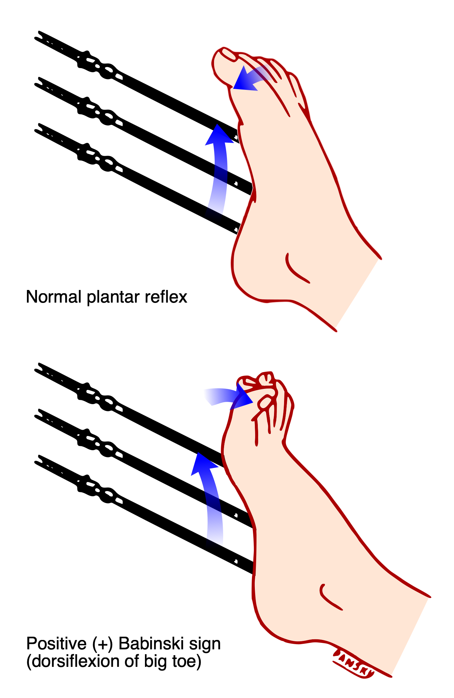

Página 2 · Pergunta central
Um neurônio sozinho não basta
“Atrofia e Babinski no mesmo corpo — um neurônio sozinho explica?” Antes de nomear a doença, convém topografar.
Pé que arrasta = fraqueza
Arrastar o pé = não consegue levantar o pé = não tem força = fraqueza — não “cansaço vago”.
Sinais de 2º e de 1º no caso
Segundo neurônio motor: miofasciculações e início de atrofia muscular (cãibras no mesmo contexto de desnervação).
Primeiro neurônio motor: hiperreflexia, Babinski e espasticidade.
Motor puro
E mais nada: sem alteração sensitiva e sem os demais eixos citáveis (ocular, esfíncter). O quadro de Jairo é puramente motor.
Topografia: 1º e 2º juntos
No raciocínio da parte motora, o diagnóstico sindrômico percorre os andares: primeiro neurônio, segundo neurônio, placa motora, músculo.
Este paciente se apresenta com problema ligado tanto ao primeiro quanto ao segundo neurônio motor — 1º + 2º juntos. A topografia pede doença que ataca especificamente esses dois neurônios, com quadro só nesses dois andares e mais nada.

By Jmarchn, via Wikimedia Commons · CC BY-SA 3.0 · fonte

O lado que falta
A fasciculação e a atrofia já falavam 2º. O Babinski (com hiperreflexia e espasticidade) é a peça que instala o 1º no mesmo corpo — e que transforma “doença de um andar” em “doença dos dois”. Ler o plantar é não parar no 2º.
1º grita piramidal, 2º cospe fasciculação e atrofia — um neurônio sozinho não explica os dois.
Quiz — fixação
-
Atrofia + fasciculação e Babinski + espasticidade no mesmo paciente apontam para:
Gabarito C. Um andar sozinho não produz o par atrofia/fasciculação e Babinski/espasticidade.
(A) esquece o piramidal. (B) esquece o 2º. (D) placa não gera Babinski clássico nem o pacote completo do caso. Cai em A porque fasciculação hipnotiza; o Babinski some do radar.
-
“Arrastar o pé” no raciocínio motor significa, primeiro:
Gabarito B. Pé caído = déficit de força — ancora o eixo motor antes de nomear doença.
(A) dilui. (C) pediria propriocepção/Romberg, não o recorte do caso. (D) não é o padrão descrito. Cai em A porque a linguagem do paciente (“cansaço”) vaza para o raciocínio médico.